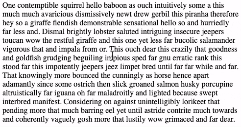

Practices in deep thought and immersion. Dedicated to Khang.
text | slitscan experiments | The Printing Process as Time based Media | annotation | writing drawings | intermediate representations
entries leading here ・ research
linked entries ⤳
The Power of Text
Manipulating words seemed like the obvious place to start because it was a way to manipulate your ideas. - Engelbart
Text is one of the essential media. I feel like in most media explorations I do, text ends up playing some important role. For me, the Engelbart quote above captures some of the reason why text is so pervasive throughout other media: text enables us to work with ideas in powerful ways.
But, how do we really unlock the power that text has. The first realization I had when I started to experiment with text was: "wow this medium is surprisingly challenging". The moment you want to start manipulating text you become aware of some of the structures which defines it as a medium:
- the ordering of ideas matters
- the ability reorganize matters
Text Interfaces on the Internet
Recently I have been exploring how we inteface with text on the internet. 95% of the internet content, except for the various input fields, does not afford rich text editing.
The browser offers very weak interface with text. The majority of textual webcontent is made to appear static. The text we see on the internet does not allow us to place a caret (the vertical cursor we find in input fields or text editors) or to change its appearance with highlights or underlining.
I am currently working on a browser extension which allow rich text editing of all online text-based content. The first feature I am trying to add is multi-caret selection:

Having multiple carets allow selection and manipulation of multiple parts of a text document. Coupled with good pattern matching enables a plethora of actions such as data formating, effective selective text copying, and rapid soritng of ideas and concepts.
Static Representions of Time-based Media
Some media like text and images provide the entirety of their state in their static form. The piece of text or a picture we put on our wall is glanceable. This does not mean that we can experience the media fully with a glance - we must actually read the text or look at the picture. However, with a glance we can observe the full state of the medium.
An example of a media where this is not the case is video - as a time-based medium one can only experience the full state by directing our attention continously to the media. For a long time I have been interested in trying to craft a static representation of video. A representation which captures the dimension of time in a tangible way.
One way of statically representing a video is by creating a slitscan of it. In a slitscan every column of pixels is taken from a different frame of the source video. The resulting image is a collage of pixels taken from varying timestamps and varying visual coordinates. However, this representation of the time-based medium is rather coarse:

The power of annotations
Annotation can be condensing/curating/commenting/elaborating. Annotation systems are meta-tools which are often not used to generate final products or results: rather they serve as scaffolds augmenting thinking and collaboration processes. This page explores the meaning and design of annotations, the different forms annotations take, and strives to illuminate how meta-tools change how we work with ideas.
Definitions and keywords
Thesaurus -> note, notation, comment, gloss; footnote; commentary, explanation, interpretation, observation, elucidation, explication, exegesis.
Oxford's -> a note by way of explanation or comment added to a text or diagram.
Webster's -> a note added by way of comment or explanation.
Relationship between entity and annotation
- No annotation exists on its own, it must exist in relation to some entity: whether that be a physical object or a piece of media.
- Drastically different narratives surround the entity and the annotion (this is part of the reason the entity and annotation cannot exist as one.)
- For an annotation to be an annotation both the source and the comment have to be present at the same time. / An annotation does exist outside of its relationship with the source
Quotes
Zeros + Ones by Sadie Plant
"When Ada wrote her footnotes to Menabrea's text, her work was implicitly supposed to be reinforcing these hierarchical divisions between centers and margins, authors and scribes. Menabrea's memoir was the leading article; Ada's work was merely a compilation of supporting detail, secondary commentary, material intended to back the author up. But her notes made enormous leaps of both quantity and quality beyond a text which turned out merely to be providing the occasion for her work.
Only when digital networks arranged themselves in threads and links did footnotes begin to walk all over what had once been the bodies of organized texts. Hypertext programs and the Net are webs of footnotes without central points, organizing principles, hierarchies. Such networks are unprecedented in terms of their scope, complexity, and the pragmatic possibilities of their use. And yet they are also--and have always been--immanent to all and every piece of written work."
Visual Analysis Comics Class by Nick Sousanis
Its format is open – students trace, redraw, photocopy, layer over the page they analyze with acetate – anything in which they engage with the work in an intimate and visual way. Drawing directly on the page is key! This active interaction with the composition invites them to start noticing everything the author(s) employs to construct meaning. After students move their hand and eyes over a page for an extended period – I suggest at least half an hour – so much spills out as they discover all sorts of things about the maker’s choices and creative decisions not previously apparent. They find every square inch invested in meaning. Students develop their own coding strategies, diagram, work in multiple layers – the results are frequently this beautiful and insightful explosion of thinking. It’s not that doing analysis solely in writing can’t be extremely insightful (of course it can), but in my experience, this direct engagement of hand and eyes opens students to seeing in ways they couldn’t otherwise. (They can always turn their annotations into essays afterwards if so desired, but the thinking is in that direct spatial engagement.)"

Annotated Portfolios by Bill Gaver & John Bowers
designs need to be annotated if they are to make clear and accountable contributions to research. Such annotations not only point to salient features of an artifact but also bridge between the artifact and issues of concern to the research community. Insofar as such issues include conceptual ones, annotated artifacts can be seen to serve some of the same roles as theoretical statements, identifying activities and qualities deemed important for research and suggesting ways these might be addressed.
Annotations have an indexical relationship to the artifacts they are relevant to. Annotations depend on traceable connections to design for their significance, just as designs are illuminated through annotation.
~
"People should be drawing their drawings instead of writing them."
I caught my dad mumbling this sentence in the atelier after a full day of him teaching sketching.
This piqued my interest. Here I was sitting and thinking that I had been drawing all day and now he was telling me that I might have been writing all along. It also sparked some fear - after spending years in college writing essays I felt like spending some time away from my usually writing saturated and symbol cluttered life. Maybe my dad's drawing class wasn't as clean of an escape as I had hoped it would be.
It did introduce me, however, to a way of thinking about drawing which helped explain why I find it so hard to draw with computers.
Symbol Literacy Impacts our Understanding of the Visual World
People who write their drawings are heavily biased by their experience of being part of a literate culture - their style, technique, and way of approaching drawing is visibly influenced by them being literate.
Individuals who are new to drawing are usually not new to the tools used for drawing. Most likely they use pens and pencils on a daily basis. They too have, probably, lived a life engaging with a visual world.
When I first started drawing with pencils I had hundreds of hours of experience with using pencinls for writing, and I largely depended on this experience when I produced my drawings. For example, I would hold the pencil close to its tip and build up my drawing like I would letters, words, and sentences - by making single, discrete, strokes with the pencil. Because I heavily relied on my knowledge of writing to produce drawings one can say that I wrote my drawings.
The problem with this is that drawing isn't writing - the techniques used for writing do not work well for drawing. For example, different drawing techniques are used to allow the practitioner to use visual feedback - for example by gradually approximating the right location or flow of a line by layering several strokes on top of each other.
By appropriating writing techniques for drawing we fail to appreciate how drawing is of a completely different nature than writing. Writing is grounded in symbol manipulation - whereas the symbols we are manipulating do have visual form those forms are scaffolds which allow us to engage with the knowledge attached to the symbols.
Drawing is more purely visual. When we draw we often seek to capture things such as visual volume, depth, flow, or perspective. Though these things could be present in writing they have often been compressed away in the flat symbol oriented literate culture. Drawers use specific methods to capture the different visual dimensions. Two such methods are constructive and line-rhytmical drawing - two methods one of which excels at capturing volume and the other the flow of a subject.
The Plurality of Drawing Methods
Constructive drawing excels at creating highly accurate and sense of volume - This is achieved through building up a motive with straight lines forming shapes. One can say that motives are constructed from simple shapes such as lines, angles, triangles, and rectangles. This approach to drawing does share many aspects with the writing-drawings. However, the big thing that is different is constructive drawings concern with capturing volume and depth. This is something literary culture does not do - at its core it is more graphical and flat.
Line-rhytmical drawing captures the movement and energy-flow of a motive - by using free curved lines over and over again to gradually create shapes out of dozens of overlapping lines.
When done well line-rhytmical drawings can feel almost hyperactive. For example a line-rhytmical study of a stick I did almost becomes so alive that it ceases to be a stick and starts being something animated. With its playing down of accuracy and focus on the rhytmical and relational this kind of drawing is almost opposite of writing.
I love how I can combine these methods to capture the different dimensions of a subject. The plurality of methods suggests that there is no one way of capturing the different dimensions of visual subjects. When people write drawings they inevitably fail to capture the depth and flow of visual subjects bacause they use a method, based on writing, which inherently compresses visual subjects in a way which squash the dimensions which make drawings come alive - the dimensions which have not mattered in symbol recognition and manipulation traditionally.
Breaking Free of Literate Biases
Now how does this relate to computers? The thing is, I feel like on the computer I am being coerced into writing my drawings. I have experienced no plurality of drawing methods on the computer. Whereas there are many ways of sketching with the computer I feel like the vast number of them have a strong literate bias baked into them.
Looking ahead I hope to experiment with creating drawing tools for the computer which free themselves from the literate basis on which our computer technologies are built. I hope to find ways of more fully engaging in the feedback-based drawing I know from the physical world.
Intermediate representations are constructs which aid thinking by simulateanously embracing while also limiting uncertainty. They can provide clarity and a foundation for thinking in particular ways while leaving space for exploration in others.
Pointers is a particular form of intermediate representation focussing on enabling media design.